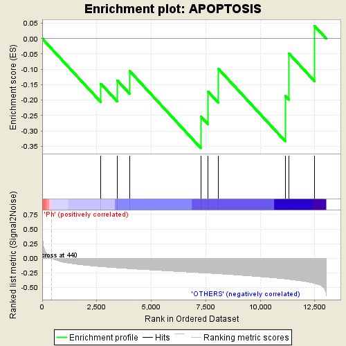

| | | Dataset | expr_all.labels_Ph.cls#Ph_versus_OTHERS.labels_Ph.cls#Ph_versus_OTHERS_repos |
| Phenotype | labels_Ph.cls#Ph_versus_OTHERS_repos |
| Upregulated in class | OTHERS |
| GeneSet | APOPTOSIS |
| Enrichment Score (ES) | -0.35600343 |
| Normalized Enrichment Score (NES) | -0.8771316 |
| Nominal p-value | 0.6262799 |
| FDR q-value | 0.85274774 |
| FWER p-Value | 0.762 |
Table: GSEA Results Summary

Fig 1: Enrichment plot: APOPTOSIS
Profile of the Running ES Score & Positions of GeneSet Members on the Rank Ordered List
| PROBE | DESCRIPTION
(from dataset) | GENE SYMBOL | GENE_TITLE | RANK IN GENE LIST | RANK METRIC SCORE | RUNNING ES | CORE ENRICHMENT | | 1 | TRADD | NA | | | 2689 | -0.143 | -0.1468 | No |
| 2 | CFLAR | NA | | | 3445 | -0.164 | -0.1363 | No |
| 3 | XIAP | NA | | | 4011 | -0.178 | -0.1055 | No |
| 4 | FADD | NA | | | 7274 | -0.248 | -0.2529 | Yes |
| 5 | BIRC3 | NA | | | 7610 | -0.255 | -0.1726 | Yes |
| 6 | CASP9 | NA | | | 8069 | -0.265 | -0.0973 | Yes |
| 7 | CASP3 | NA | | | 11146 | -0.354 | -0.1859 | Yes |
| 8 | BIRC7 | NA | | | 11312 | -0.362 | -0.0480 | Yes |
| 9 | BIRC2 | NA | | | 12492 | -0.432 | 0.0412 | Yes |
Table: GSEA details [plain text format]
Fig 2: APOPTOSIS
Blue-Pink O' Gram in the Space of the Analyzed GeneSet
Fig 3: APOPTOSIS: Random ES distribution
Gene set null distribution of ES for APOPTOSIS